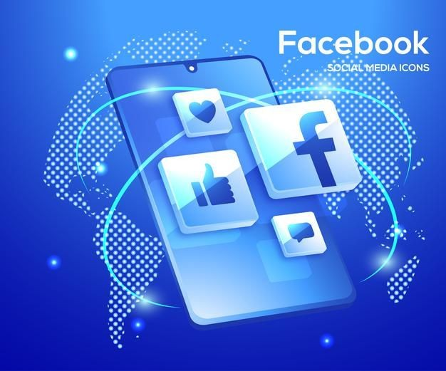

When it comes to creating a loyal audience on social media, Facebook community building is where the magic happens. You know, it's no longer just about the likes and shares—those days are behind us. Now, it’s about fostering real relationships, having conversations, and getting your community genuinely engaged.
If you’re serious about growing your online presence, you’ve probably heard it before: Facebook Groups are gold. Why? It’s simple: Facebook's algorithms prioritize groups in the feed. If you have a community that’s buzzing with activity, Facebook will make sure more people see your content. Need proof? Check out this study by Social Media Examiner showing how engagement skyrockets in active Facebook groups.
But the real question is: how do you build that community and keep people engaged? I’ve got you covered.
Before you invite anyone, make sure you have a solid purpose for your group. Are you trying to create a fan base for your blog, or is it a space for customers to ask questions and share experiences? Whatever it is, make sure your group members know what they’re there for.
Here's a quick tip: Write a clear group description that tells potential members exactly what they’ll get out of joining. You can check out Facebook’s official group for creators as an example.
Consistency is key. You want to keep your group active, but let’s be real—no one likes getting spammed. A good rule of thumb is to post once a day or every other day. Whether it’s a question, a helpful article, or even a meme, make sure it’s something that sparks conversation.
Remember, the goal is engagement. Don’t just broadcast your posts; interact with your members. When someone leaves a comment, respond! If people feel heard, they’ll keep coming back.
One of the easiest ways to boost engagement is to encourage members to post their own content. Ask questions that invite discussion or host a weekly thread where members can share their own tips, stories, or struggles. For example, if your group is about fitness, you could ask members to share their workout routines for the week.
A little user-generated content can go a long way. People love to feel like they’re part of something, and when they contribute, they become invested in the community.
Want to know what your group members are thinking? Just ask! Polls and surveys are a great way to get instant feedback. Plus, they’re super easy to set up on Facebook.
You can ask questions like, “What kind of content would you like to see more of?” or “Which day works best for a live Q&A?” Engaging your audience in decisions makes them feel involved and valued.
Building a Facebook community is about more than just growing numbers. It’s about creating a space where your audience feels connected, heard, and appreciated. By posting consistently, encouraging interaction, and staying engaged yourself, you’ll see your community grow—and with it, your brand’s influence.
Have you started building your Facebook group yet? If not, now’s the perfect time to jump in! And if you want more tips on growing your online presence, be sure to check out Buffer’s social media strategies.